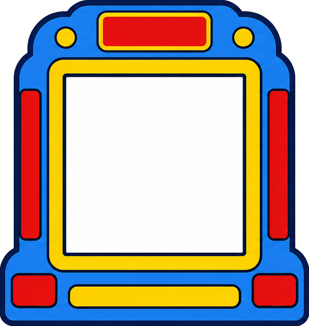

べつのセットに まるごと 切りかえられます。
セットの ふやしかたは sets.js の いちばん上に 書いてあります。
チェックした カードだけが ルーレットに でます。（1つ以上）
看板と スタートボタンの 文字を 書きかえられます。空にすると 文字なしになります。
「なおす」で、名前・よみ・やることを 直せます。
もとから入っているセットにも、あとから カードを ふやせます
（もとの絵は そのまま、足したカードは 消せます）。
「＋ 新しいセット」なら まるごと 作れます。作ったセットは
このブラウザに 保存されます。ほかの機械でも使うときは「書き出す」で
ファイルにして 持っていってください。
「もう出さない」に すると、出たカードは つぎから でません。
ひとりずつ ちがう カードに したいときに つかいます。
あそぶ画面の 左上に のこり枚数が でます。
とちゅうで この設定画面を 見たり、セットを 行き来しても、
のこりは そのまま つづきます。
ぜんぶ 出たあとは、もう一度 スタートを おすと 新しい回に なります。
スタートを おすと、ひとりでに ゆっくり 止まります。目で追うのが ゆっくりな お子さんには「ゆっくり」を。
「Natural」「Online」「Google」と付いた声ほど なめらかです。見あたらない場合は
Windowsの 設定 → 時刻と言語 → 音声認識 → 音声の管理 から追加できます。
いちばん自然なのは 先生の声を録音して使う方法です。カードの名前を ファイル名にした
mp3 を、そのセットの 声のフォルダ（いまは voice/）に置くと、
読み上げの かわりに その音声が流れます。
カードを 1まい以上 入れてください。絵をえらぶと 小さくしてから保存します。